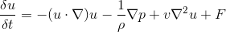

For our final project we created a real-time interactive 2D grid-based smoke and fluid simulator. In order to do this we created a custom shader pipeline that solves the Navier-stokes equations. The fluid simulation we created also includes gravity, temperature, and density in order to simulate smoke. In order to visualize the smoke and fluid we simulate injecting dye into the system. The user can add velocity, heat, or dye+density to the system as well as tweak a handful of variables using the mouse and keyboard. The user can also switch through different stages in the pipeline and see the individual stages of the simulation such as the velocity field, the pressure field, or the heat and density map. As an extra bonus we added a handful of noise filters at the end of the pipeline to achieve some stunning visual effects.
Our project simulates a homogeneous, incompressible fluid using the Navier-Stokes equations as a vector field in a 2D cartesian grid, and also keeps track of several other scalar fields (e.g. Dye, density, temperature) in other FBOs.
The Navier-Stokes equation for incompressible homogeneous fluids has the form:

Here, u is the vector field, p is a scalar field representing pressure, rho is the fluid density, v is the viscosity, and F represents any other forces we want to add. Each term in the sum has a physical interpretation: The first is advection, or the way that velocity spreads throughout the liquid. The second is pressure, and the third is diffusion, which models a fluid's resistence to changing shape.
Part of the equation is also the continuity equation, which requires that the divergence of the vector field is 0 at every time step.
Closed-form solutions to the Navier-Stokes equations are rare and usually restricted to contrived examples, but we can solve them incrementally with finite difference approximations. We use an implicit Euler method for advection, since explicit methods tend to explode and since implicit methods lend themselves much better to parallel computation.
Looing at the above equation, it's hard to see how to translate onto a GPU. We would like to turn the equation into the composition of several functions, so we can just apply them one by one in the rending pipeline.
For advection, we can use implicit euler integration to look back one timestep and interpolate between adjacent grid cells to get a new velocity. The diffusion term is a Laplacian that we can can solve using any iterative algorithm to approximate the solutions of a system of linear equations. In general, we use Jacobi iterations to solve Laplacians in this project. Jacobi iteration is slower than some other solvers, but it's easier to implement.
We also apply force in a Gaussian splat away from the mouse, along with a force in the Y direction from our smoke implementation, which I'll talk about later.
Applying these 3 functions does update for 3 of the terms of the Navier-Stokes equations, but it doesn't account for the continuity equation, which requires that our field has no divergence. To remedy this, we use the Helmholtz-Hodge decomposition. The Helmholtz-Hodge decomposition states that any vector field on a region of space with a differentiable boundary can be decomposed into the sum of a vector field with no divergence that is parallel to that boundary and the gradient of a scalar field. This works well for our uses, since this means that if we subtract the gradient of our pressure field from the field we get from the functions in the preceding paragraphs, the result has zero divergence. To calculate the gradient of the pressure gradient, we again use Jacobi iteration in a similar vein to Diffusion.
Thus we have four functions: one to advect velocity along the fluid, one using Jacobi iteration to account for viscous diffusion, one to add whatever extra forces we want, and one to project the first 3 results onto a divergence-free vector field.
After getting through all of this daunting math and enforcing constraints on the boundaries of the screen, we have a working vector field. In to visualize it, we also advect a vector field of dye colors, along with scalar fields of density and temperature, using the vector field.
The last step to simulating smoke is using our temperature and density fields to apply one more force to account for buoyancy. The intuition is that dense air should fall and hot air should rise, so our formula is simply to subtract the density of the air and to add the temperature, both scaled by tunable constants.
Initially, we tried making our simulation on shadertoy, but we realized early on that we were going to need a lot more intermediate FBOs than shadertoy offers. We looked creating our own pipeline from scratch, at first using OpenGL but later using OpenFrameworks. Our pipeline is pretty much as described in the math section: we apply one shader for advection, one shader for diffusion NUM_ITER times, 3 shaders to introduce external forces, dye, smoke, and temperature, 2 shaders to calculate the pressure field, 1 shader to project our intermediate vector field onto its divergence-free component, 1 shader to enforce boundary conditions, and 1 shader to enforce buoyancy.
We kept a lot of FBOs around to visualize intermediate states for debugging, but without them it boils down to 3 that we need to keep per iteration: the velocity field u, the dye field that we're visualizing, and one more field that we put smoke and dye in.
We also added a bunch of tweakable parameters! A full list follows:Finally, we made a pulled a few shaders from the internet to overlay over the fluid for some cool efects. They're cited in the source code, but the idea is that we use the x and y of the fluid vector field as replacements for the indices into the shaders.
|
|
|
|